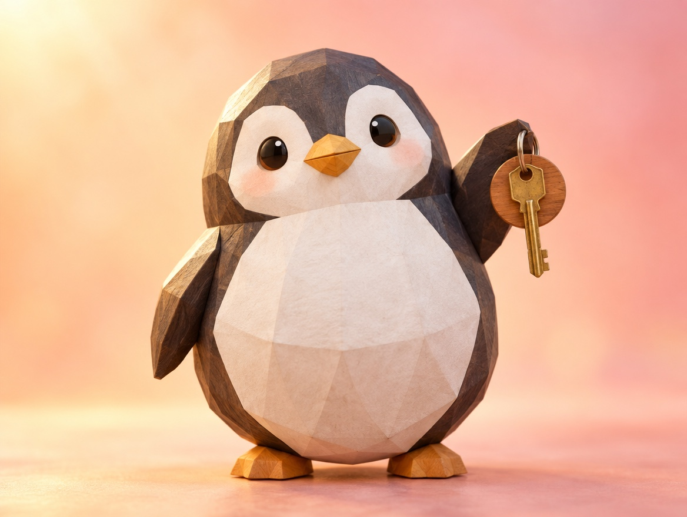

📝 DRAFT · 下書き — まだ本番に出していません · 下書き一覧
🐧 EVERYDAY LIFE⚡ 17 SEC
If you connect with "but," every place has a good side ☀️

Good Points
Some people can find a good point in any place.
Place Examples
Near the station is "handy," and the suburbs are "quiet."
An old room means "cheap rent," and living alone means "free."
⚡ TRY IT
Flip it with "but"
Each place has a minus side. Tap the card and turn it around with "but."
☀️ Good sides found: 0/6
☀️ The sun is out! Every place had a good side.
The Trick
The trick is to connect with "but."
Try Saying
Like, "It is hard, but it will be fun when it works out."
📚 I learned this from the Japanese blog "Panda no Ondo".